Seats - Driver/Passenger Heated Seats Inop./Slow to Warm
TECHNICALBulletin No.: 10-08-50-008B
Date: January 13, 2011
Subject: Driver or Passenger Heated Seat Inoperative, Slow to Warm, DTC(s) Set (Repair Connector, Re-Route Harness)
Models:
2007-2010 Cadillac Escalade, Escalade ESV, Escalade EXT
2007-2010 Chevrolet Silverado, Suburban, Tahoe
2011 Chevrolet Silverado Heavy Duty
2007-2010 GMC Sierra, Yukon, Yukon XL, Yukon Denali, Yukon Denali XL
2011 GMC Sierra Heavy Duty
All Equipped with Heated Front Seat (RPO AN3, KA1) or Heated and Cooled Seat (RPO KB6) and/or Luxury Package (RPO PCK)
Supercede:
This bulletin is being revised to update the RPOs. Please discard Corporate Bulletin Number 10-08-50-008A (Section 08 - Body and Accessories).
Condition
Some customers may comment that the driver or passenger heated seat system exhibits the following symptoms:
- Heated seat turns on and then turns off within 1 to 10 minutes (at any 60 second interval).
- The system doesn't get warm enough, or gets warm very slowly.
- The heated seat system is completely inoperative.
Upon further review, DTCs B2430 0D and/or B2180 0D may be set as a current or history code if the vehicle is equipped with heated seats only (RPO KA1). Also, the LED indicator for the heated seats may come On and then flash after approximately 1 minute, then go out.
If the vehicle is equipped with heated and cooled seats (KB6), the switch LED indicator may stay On, but the heated and cooled seat is inoperative. The fan will continue to blow air.
Cause
Heated Seats (RPO AN3, KA1)
The heated seat control circuit terminal and/or ground terminal in harness connector X1 to the memory seat module (MSM) may have lost tension and is loose. The reduced terminal tension increases resistance in the connector, which may result in the symptoms described above.
Heated and Cooled Seats (RPO KB6)
The thermo-electric device (TED) in the seat cushion/seat back ventilation heating and cooling module may have become inoperative.
Correction
Heated Seats (RPO AN3, KA1)
Follow the steps below to correct the concern with the heated seats.
Note
This repair requires a unique anti-abrasion electrical tape and harness clip from Kent Automotive. Refer to the Parts Information below.
1. Access and remove the seat bolts/nuts.
2. Adjust the seat rearward about halfway. Adjust the seat recline full forward.
3. Tilt the seat backward to access the bottom of the seat. Prop the seat up with a suitable tool if required.
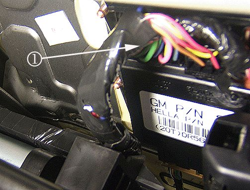
4. Disconnect seat harness connectors (1) X1, X2, X3 and X4 from the MSM.
5. Identify connector X1. Refer to Component Connector End Views in SI.
6. Perform a terminal drag test on connector X1, paying special attention to terminals 1, 4, 6, 11 and 14. Using an equivalent male terminal from the J-38125, test that the retention force is significantly different between a good terminal and a suspect terminal. Refer to Testing for Intermittent Conditions and Poor Connections in SI.
7. Replace any terminal in question including connector X1 terminals 1, 4, 6, 11 and 14 if necessary. Refer to Repairing Connector Terminals in SI.
8. Identify connector X4. Refer to Component Connector End Views in SI.
9. Perform the terminal drag test described in step 6, paying special attention to terminal 14.
10. Replace any terminal in question including connector X4 terminal 14 if necessary. Refer to Repairing Connector Terminals in SI.
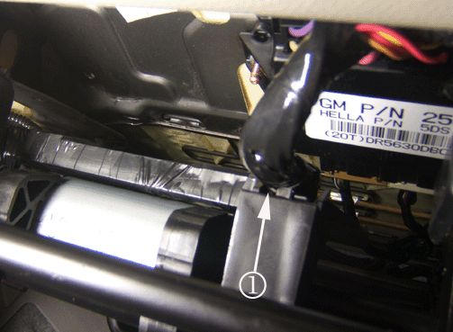
11. Remove the harness clip (1) from the plastic carrier.
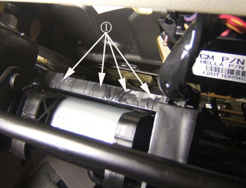
12. Cut the electrical tape holding the harness in the plastic carrier using a sharp utility knife in the area shown (1).
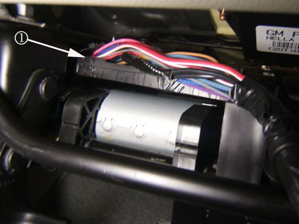
13. Free the harness from the carrier back to the area shown (1).
14. Obtain "*Woven Polyester (PET) Electrical Tape" (Special Order P/N RZ97156A00) from Kent Automotive. Refer to Parts Information below.
Important
DO NOT substitute with vinyl electrical tape or friction tape. Use only the tape specified above.
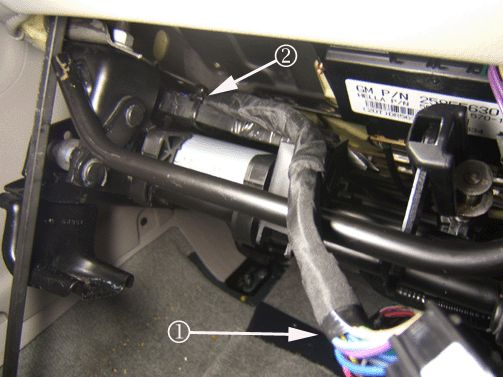
15. Tape the harness starting at the MSM connectors (1) extending back to the new break-out location (2) in the plastic carrier.
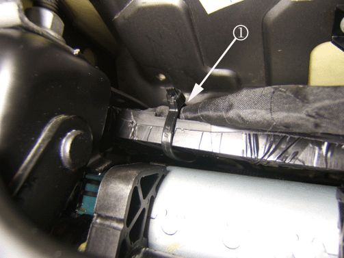
16. Install a plastic tie strap around the harness and the plastic carrier at the break-out point (1).
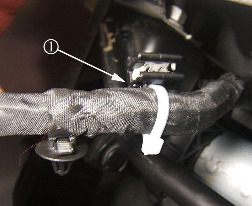
17. Install the new harness edge clip (1) 10 mm (0.4 in) further from the connectors and the existing harness clip. Ensure the clip is installed in the orientation shown.
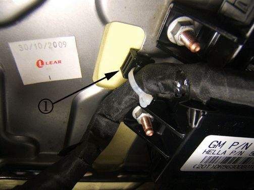
18. Install the harness with the new harness clip in the location shown (1).
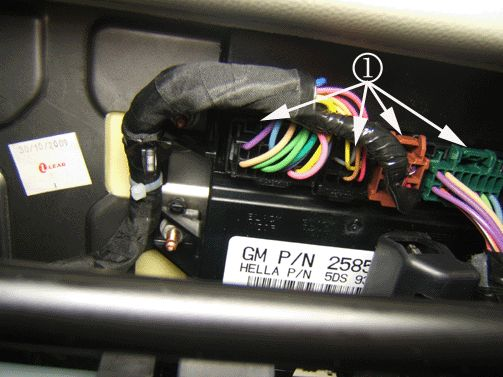
19. Reinstall the harness connectors (1) to the MSM.
20. Reinstall the seat to the vehicle.
Heated and Cooled Seats (RPO KB6)
Follow the steps below to correct the concern with the heated and cooled seats.
1. Inspect the ventilation heating and cooling module for a concern with the TED. Refer to Seat Heating and Cooling, Diagnostic Information and Procedures in SI.
Note
If the heated and cooled seat function is inoperative, but the heat switch indicators are On, the MSM is functioning properly and the concern is with the TED.
2. If the TED is found to be the concern, replace the seat cushion or seat back ventilation heating and cooling module. Refer to Driver or Passenger Seat Back Ventilation Heating and Cooling Blower Replacement or Driver or Passenger Seat Cushion Ventilation Heating and Cooling Blower Replacement in SI. If the TED is not the concern, follow normal diagnostics and repair in SI.
*We believe this source and their products to be reliable. There may be additional manufacturers of such products/materials. General Motors does not endorse, indicate any preference for or assume any responsibility for the products or material from this firm or for any such items that may be available from other sources.
Parts Information
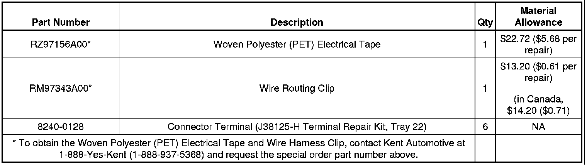
Warranty Information
Use the appropriate Labor Operation based on the repair completed.
Heated Seats (RPO AN3, KA1)
For vehicles repaired under warranty, use:
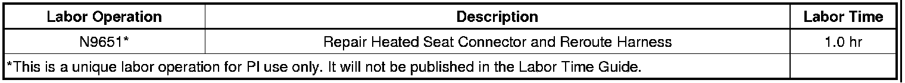
Heated and Cooled Seats (RPO KB6)
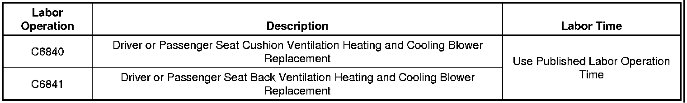
For vehicles repaired under warranty, use the table.

Disclaimer